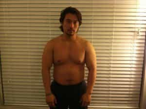
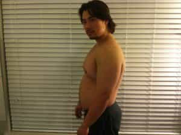
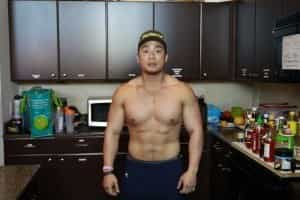
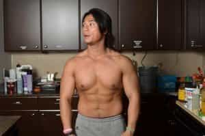
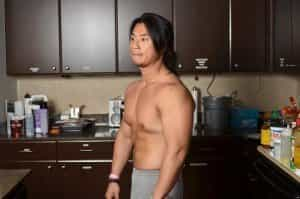
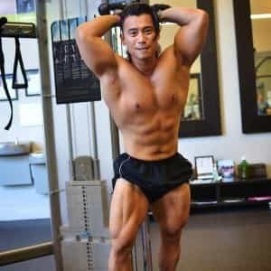

Sponsored Article is ROK's official account that publishes sponsored articles from advertisers. If you are interested hiring a sponsored article for your site, product, or service, visit our advertising page.


The following article was sponsored by Clark Shao
Hey guys, it’s Clark – the #1 subscribed-to fitness trainer on Youtube. I’m going to explain the single most important factor for why most guys aren’t able to get the ripped body they want – despite exhausting, repetitive efforts – and how you can fix this with just 3 simple steps.
I also have a really sweet special hook up for you guys just for being Return Of Kings readers… which you’ll see in just a minute.
But first, I just want to say thanks to Return Of Kings (and you guys reading) for supporting our Six Pack Shortcuts Youtube Channel. I can’t believe it’s been six years since we’ve posted our first workout on Youtube. It’s unbelievable how many guys we get sharing their fitness success stories with us.
Now, many guys are at least a little familiar with our Six Pack Shortcuts program… But what most guys don’t know is that I’ve spent the past 6 years doing new research with the help of my doctor and team. I’ve updated and improved the Original Six Pack Shortcuts program and there’s an all new design based on some revolutionary discoveries we made about fat loss.
Using this research, we’ve narrowed it down to just 3 simple steps that involve improving and supporting your body’s most powerful fat burning hormones – which will allow you to accelerate your fat loss and overcome plateaus.
For those who aren’t too familiar… Let me explain a bit about the importance of your hormones in the fat loss process: Hormones (or hormone imbalances, really) are one of the main reasons why most guys can never achieve the body they want – no matter how much they workout or diet.
The truth is, if you don’t have control of your key fat burning hormones, you’ll be left with a huge fat burning disadvantage… and all the results you expect to see from your hard work at the gym can be cancelled out due to poor hormone production in your body.
Now, if you haven’t seen the results you truly want with your current workouts or eating plan, chances are that a hormone imbalance could be responsible. To make it worse, the workouts and diets you have tried or are still using now might be hurting your hormones even more.
For example, did you know that exercises like long term cardio or aerobic group exercise, like those you see on late night infomercials or your local gym, can decrease your body’s two most vital fat burning hormones – Testosterone and Leptin. (source: http://www.ncbi.nlm.nih.gov/pubmed/12324651)
The US National Library of Medicine reports that, “leptin concentrations are reduced 48 hours after long-term aerobic exercise.” And that’s just the beginning.
In a study done by the National Strength and Conditioning Association – Research showed that… Performing (cardio) also known as conditioning work left testosterone depressed at 24 and 48 hours post exercise.
And when it comes to dieting, many of us were tricked to believe that cutting calories was healthy for fat loss, but there’s more to the story here….
Webmd reports that “when people diet, they eat less… which then decreases the amount of leptin produced… Now your leptin level goes below your ideal leptin threshold. When it does that, your brain senses starvation…. so you get hungrier. Plus, your body will then begin to take up extra energy and store it as fat.”
After just a few days of calorie-restriction dieting… your leptin levels can drop by over 30%… This means you’ll immediately start adding fat straight to your belly.
But guys, don’t worry… if you have belly fat, or think you can’t get into the shape you want due to poor hormone levels, I want to assure you that it’s not your fault and you can definitely fix it in these 3 simple steps.
Now the first step is to “Jump start” your fat loss using a few weeks of workouts designed to maximize the Afterburn Effect.
Now if you’re not familiar with the Afterburn Effect, otherwise known as EPOC (Excessive Post-Exercise Oxygen Consumption)… it’s a way to keep your body automatically burning fat on it’s own – even when you’re not working out. It’s done using a unique sequence of compound exercises to trigger a post workout, fat-burning effect that can last up to 48 hours.
This means you’re not only burning fat in the short period of time you’re exercising… But the Afterburn effect will allow you to keep burning fat even after your workout ends… like when you’re sitting at work, hangout with your friends, and even while you’re sleeping.
The reason we need to do this fat loss jump start first is because having belly fat suppresses your leptin and your testosterone.
Men’s Health reports that Belly fat “contains aromatase, an enzyme that converts testosterone into estrogens, the main sex hormones in women. Having extra estrogens floating around your system triggers your body to slow its production of testosterone. And the less testosterone you make, the more belly fat you accumulate and the more estrogens you spew. It’s a vicious, emasculating circle.”
But like I just explained, using Afterburn training workouts will allow you to quickly and dramatically reduce your belly fat, and stop any further hormonal damage. At the same time, it will allow you to focus on boosting the production of these hormones, and get you ripped abs fast.
With your belly fat eliminated from the fat loss jump start… Your vital fat burning hormones will no longer be destroyed by the dangerous chemicals your belly fat was harnessing, and you’ll now be able to fully optimize and support your master fat burning hormone, Leptin.
In Step 2, I recommend customizing and choosing specific exercises that are scientifically proven to support your leptin levels. This will ensure that you don’t just gain the weight back.
This will actually block the fat from being stored on your stomach.
It’s critical that you do these steps in this exact order, and that you do the right compound workouts and eat the right foods in each phase.
Check out my buddy Johnson…
He’s a few months away from turning 36, and just one of the thousands who has already transformed his body from the soft and pudgy look to the ripped athletic body we all want…
And he did it by following my 3 Simple Hormone Boosting Steps:
This is Johnson Before he started…


This is Johnson after quickly eliminating his belly fat with the Afterburn Effect in Step 1.

Here’s Johnson after completing Step 2 – the Leptin boosting phase.


This will help you more with your fat burning, and will help you gain muscle once you’re lean. And this is Johnson after completing the final step – The testosterone boosting phase.

It was shocking to see how Johnson was getting more ripped than most guys I’d seen in magazines… in fact I think he even had better abs than me. And it didn’t take him years, it took only a couple of short weeks… and all with just those 3 hormone boosting steps.
Now if you’re like Johnson was, you’re probably still a little bit confused on exactly what you need to do…
That’s why we put together this free video, showing you exactly what to do to get started right away.
Get the body you want and deserve today.
And one last thing… As a gift to you in our celebration to our 6 years to Six Pack Shortcuts, I’m going to hook you up huge today.
Our new program – Six Pack Shortcuts 2 is available now for $97. But as a loyal reader of Return of Kings, I want you to have it for
Just $47 right now.
If you truly want six pack abs – Claim Your Limited Time Return of Kings Discount Now
Peace
-Clark